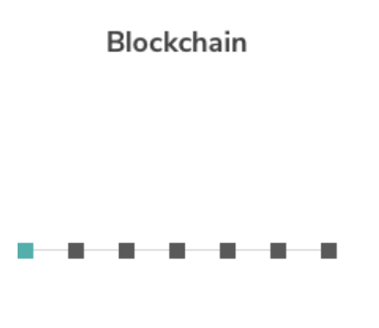
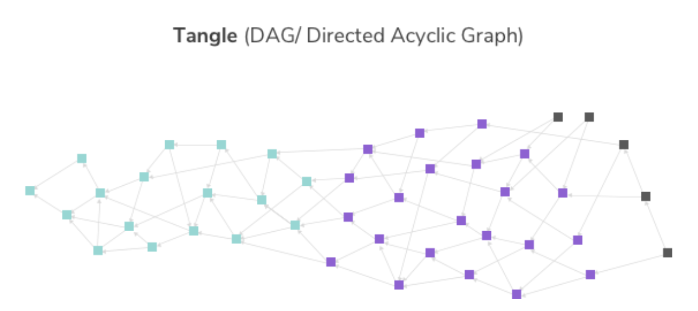

- 00 开篇词 帮你从0到1深入学习区块链技术.md.html
- 尾声篇 授人以鱼，不如授人以渔.md.html
- 新书首发《区块链第一课：深入浅出技术与应用》.md.html
- 第01讲 到底什么才是区块链？.md.html
- 第02讲 区块链到底是怎么运行的？.md.html
- 第03讲 浅说区块链共识机制.md.html
- 第04讲 区块链的应用类型.md.html
- 第05讲 如何理解数字货币？它与区块链又是什么样的关系？.md.html
- 第06讲 理解区块链之前，先上手体验一把数字货币.md.html
- 第07讲 区块链的常见误区.md.html
- 第08讲 最主流区块链项目有哪些？.md.html
- 第09讲 深入区块链技术（一）：技术基础.md.html
- 第10讲 深入区块链技术（二）：P2P网络.md.html
- 第11讲 深入区块链技术（三）：共识算法与分布式一致性算法.md.html
- 第12讲 深入区块链技术（四）：PoW共识.md.html
- 第13讲 深入区块链技术（五）：PoS共识机制.md.html
- 第14讲 深入区块链技术（六）：DPoS共识机制.md.html
- 第15讲 深入区块链技术（七）：哈希与加密算法.md.html
- 第16讲 深入区块链技术（八）： UTXO与普通账户模型.md.html
- 第17讲 去中心化与区块链交易性能.md.html
- 第18讲 智能合约与以太坊.md.html
- 第19讲 上手搭建一条自己的智能合约.md.html
- 第20讲 区块链项目详解：比特股BTS.md.html
- 第21讲 引人瞩目的区块链项目：EOS、IOTA、Cardano.md.html
- 第22讲 国内区块链项目技术一览.md.html
- 第23讲 联盟链和它的困境.md.html
- 第24讲 比特币专题（一）历史与货币.md.html
- 第25讲 比特币专题（二）：扩容之争、IFO与链上治理.md.html
- 第26讲 数字货币和数字资产.md.html
- 第27讲 弄懂数字货币交易平台（一）.md.html
- 第28讲 弄懂数字货币交易平台（二）.md.html
- 第29讲 互联网身份与区块链数字身份.md.html
- 第30讲 区块链即服务BaaS.md.html
- 第31讲 数字货币钱包服务.md.html
- 第32讲 区块链与供应链（一）.md.html
- 第33讲 区块链与供应链（二）.md.html
- 第34讲 从业区块链需要了解什么？.md.html
- 第35讲 搭建你的迷你区块链（设计篇 ）.md.html
- 第36讲 搭建你的迷你区块链（实践篇）.md.html
- 捐赠
第21讲 引人瞩目的区块链项目：EOS、IOTA、Cardano
在第 8 讲中，我们已经讲过了一些成熟的区块链项目，这些项目多数都属于数字货币项目。
今天我们来聊几个比较创新型的区块链项目，它们非常吸引人们的视线，容易引起话题，一方面它们的市场营销非常成功，另一方面它们也提出了革新的区块链技术概念。
下面我们来聊聊三个项目。
柚子EOS
1.什么是EOS
EOS全称EOS.IO软件，EOS也是EOS.IO上的平台代币缩写，它暂时没有准确的中文翻译，中文社区把EOS叫柚子，这一点其实得益于EOS的发音与水果“柚子”相近。
EOS是一个以太坊的竞争型区块链，它提供了全新的区块链架构，使得去中心化平台水平扩容和垂直扩容都成为了可能。
如果智能合约是程序，那么可以把EOS看成是一个超大的操作系统了，它为所有的程序，也就是智能合约提供了基本设施。例如账户、授权、数据库、异步通信等接口。
它甚至可以跨平台驱动大量的CPU或者集群，所以EOS的TPS肯定是远超以太坊的，这也使得构建基于区块链的应用几乎没有成本而且快速高效。
2.EOS的瞩目之处
在说EOS之前，我们来回顾一下DPoS。
DPoS其实是BM参照现实世界中的议会制度而设计的共识算法。DPoS的核心理念其实是投票，它的设计理念是延迟性惩罚，它假设参与者绝大部分都是没有恶意的。
“人性本善”的假设虽然让系统的作弊成本降低，但是随之而来的惩罚也非常严厉，就是丧失见证人的资格，但是带来的好处则是效率的提升。
我们来看看EOS吸引人的地方，这里一共有两点，第一是EOS号称可以提供百万级TPS交易性能，第二是EOS的链上治理机制：区块链宪法以及21个超级节点（见证人节点）。
在EOS中，记账节点又被称作超级节点，EOS一共有21个主节点，另外还有100个备选超级节点，这些超级节点完全是等价的。
超级节点的基本职责包括了忠实打包交易、执行并验证智能合约、向全网广播有效区块以外，还多了一项职责：保障并促进EOS项目的发展。
如何促进呢？BM在EOS中强化了DPoS算法的投票机制，并首次提出了区块链宪法的概念，我们可以直接引用EOS技术白皮书中的内容来一探究竟。
EOS.IO 应用使得区块链创建了一个点对点的服务条款协议或者绑定用户到一个合约，这都需要用户对其签名，简称“宪法”。
宪法的内容定义了仅仅依靠代码无法在用户间履行义务，同时通过建立管辖权和可选的法律来解决相互间的争端。
每个在网络广播的交易都必须将宪法的哈希值作为签名的一部分，从而显性地将签名者绑定在合约中。
宪法还定义了人类可读意图的源代码协议。 这个意图是用来识别错误和功能之间的差异，当错误发生时，引导社区对什么是适当或不当修复。
可以看出区块链宪法是一种非代码强制执行的规则，有点像我们安装软件时的“同意”协议，所以它更像是一种人为承诺，为了弥补DPoS较弱的抵抗恶意规则的缺陷。
那么什么人可以发起并修改宪法呢？就是超级节点，也就是记账节点，它规定了17/21以上的节点同意才能发起修改提案。
我们可以看出超级节点的权力十分巨大，这也引来了人们对此产生了争议。
3.EOS的争议
Vitalik 针对EOS超级节点竞选发表过意见。他认为21个节点的DPoS虽然引入了治理结构，但也很容易受到选民和持币大户的操纵，最终导致“财阀统治型”的治理结构。
在超级节点竞选过程中，某些节点为了获得更多的选票，承诺当选后可以给投票者分红，这在西方文化中是无法接受的，这一点似乎违背了BM设计DPoS的初衷，所以BM以及EOS团队都表示坚决反对。
BM对此也给了回应，BM表示自己的目标是降低创建社区的准入门槛，并允许市场自由竞争来奖励最高效的社区以及惩罚最腐败的社区。
他也认为善良是主观的，而且每个社区都能定义持有什么样的价值观是好人，并积极驱逐他们所认为的坏人。
Vitalik和BM都相互发文怒“怼”对方，但是总的来说，Vitalik和BM这种公开讨论推进了区块链行业的发展，给人们带来了更多哲学和设计原则上的思考。我在附录中给出了社区翻译版文章，你可以进行查询。
埃欧塔IOTA
IOTA是一个为了物联网（IoT)而生的区块链项目。严格来说，IOTA不是“区块链”，因为它没有区块，也不是链式结构。
IOTA提出了一种基于有向无环图（DAG）的分布式账本结构，这种结构IOTA将其命名为The Tangle，探戈。

上图是常见区块链账本结构，而下图展示了Tangle的账本结构。

我们来看看这两张图的区别，首先区块链账本结构的打包单位是区块，而Tangle直接就是交易，或者或“交易引用”。
任意交易Tx-black会引用过去的两条交易记录，这样被引用的交易Tx-purple相当于有了一次确认，间接地证明了合法性，随着一次又一次的被引用，Tx-purple会转变成Tx-green。
- Tx-black相当于图种的黑色图块，代表未确认的交易；
- Tx-purple相当于紫色图块，代表已确认但还未成熟的交易；
- Tx-green相当于是绿色图块，代表已确认已成熟的交易，是可信的。
也就是说，我们发送交易的目标是成本绿色部分的交易，成为绿色部分的交易，可信度是可以计算的，面对不同的交易场景，可信度可以设置为51%，90%或者百分之百。
那么说，如何计算这种可信度呢？
IOTA上的共识算法叫做MCMC算法，它可以任意选择黑色部分的两笔交易，进行引用。
我们回到DAG的结构中，我们发现每一个绿色的交易都会有一条从黑色起始位置通往它的路径，那么你这笔交易的可信程度就可以很容易计算。
例如我们执行MCMC算法N次，这笔交易被全网接受的概率就是M/N，其中M就是能从底部通往这笔交易的数量。
Tangle结构和MCMC共识是非常具有吸引力的，它也带来了以下特性。
- 0交易费：由于没有记账节点，目前没有考虑设置交易费。
- 水平扩容：由于Tangle的结构不涉及记账节点，交易吞吐可以随着规模大容量也跟着提升。
- 分区再合并：由于不是单链结构，私下记账以后也可以合并到Tangle账本中，不存在分叉这一说。
IOTA的Tangle账本结构，为区块链技术带来了新的视角，这也是它吸引人的关键。
卡尔达诺Cardano
卡尔达诺（Cardano）也是一个正在开发中的新一代区块链智能合约平台。
卡尔达诺项目最大的特色是由理论研究主导，严格采用数学形式化验证的来证明严谨、安全性的区块链。
卡尔达诺认为现阶段基础公链在无论在可规模化性（Scalability）、可互操作性（Interoperability）和可持续发展性（Sustainability）均存在不足，卡尔达诺希望进行概念和技术上的创新，最终解决上述三个方面问题。
卡尔达诺的团队认为目前区块链面临着两个比较突出的问题：
1.区块链协议的升级将会导致区块链分叉； 2.区块链的水平扩容和垂直扩容能力不足。
所以Cardano提出了分层架构理念，这似乎与传统IT架构模式：分层式架构模式有点像，卡尔达诺由两个层次组成。
- Settlement Layer清算层：卡尔达诺的代币ADA在该层流动，是整个系统的支付和清算的基础。
- Computation Layer 计算层：卡尔达诺将在计算层提供智能合约、身份认证、消息通信等等功能。
相比于概念创新，卡尔达诺的团队研究了一种被命名为 Ouroboros 的算法，它其实也是PoS共识算法的变种，不同的是卡尔达诺团队为此提供了数学形式化证明，证明了它是高效、安全的共识算法。
卡尔达诺是一种理论研究驱动实践的尝试，无论是两层设计，还是Ouroboros算法，都为区块链技术的发展提供了值得参考的视角。
总结
今天，我们介绍了EOS、IOTA、ADA三个受人瞩目的区块链项目，EOS和ADA都是致力于区块链去中心化的应用平台，IOTA致力于为物联网提供分布式账本。这些项目引领了区块链的发展方向，无论是技术层面还是市场层面，他们都是非常出色的。
所以，你还可以想到那些技术或者市场做得出色的区块链项目呢？快来分享一下吧。感谢你的收听，我们下次再见。
参考链接：
© 2019 - 2023 Liangliang Lee. Powered by gin and hexo-theme-book.